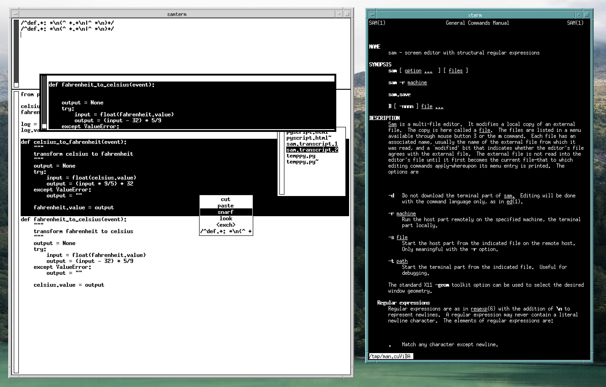

Discovering the sam editor
In Kernighan's book UNIX: a history and a memoir, he mentions the editor sam, which seems to have been in use by many well known members of the IT scene. So, when reading that book, I got curious and did a few experiments with this editor.
It was quite an interesting experience. One of my first impressions was, this is almost like a vi of an alternate reality. Vi takes the commands and concepts of the ed editor from the command line to visual editing; sam does almost the same, but in a completely different way. It uses a GUI (by means of X11), but within that, it presents a command window (besides having actual text file windows). There you work like on a command line, issuing almost ed-like commands. But you must use the mouse to select regions, shift windows and use the menu to cut and paste or repeat commands.

Figure 1: The sam editor.
In difference to vi, that command language has been developed into an interesting direction1. Of this development, two features should be mentioned here. First, instead of working with single lines of text, the commands have been adopted to work with blocks or regions of text, and second, the commands can be stacked together. So for example, you can formulate a regexp repeatedly selecting text blocks, like paragraphs. Then, for each of these selections, the next regexp can select sub-elements, like single sentences. And finally, you can use single commands or command sets working with or modifying that innermost current selection. Afterwards, the larger selection of the previous level is re-established and that level's iteration continues.
As an example, here is a regexp matching a python function: it matches regions starting with a def keyword in the first column, then continues as long as it finds indented or empty lines. Using this regexp as a command works as known from vi, selecting the next matching region.
/^def.+: *\n(^ +.*\n|^ *\n)+/
The x command, applied to a region (here, we use the shortcut for 0,$ selecting all of the current file, ","), is an iterator consecutively selecting each of the matches and then executing the following command on a new region defined by this selection. The p command just prints the current selection to the command window.
,x/^def.+: *\n(^ +.*\n|^ *\n)+/ p
The y command is an iterator selecting each part of the current region not matching it's regexp. So the following combination selects each python function, then for each selects the parts outside of possible docstrings, then prints each of them.
,x/^def.+: *\n(^ +.*\n|^ *\n)+/ y/^ *"""(.|\n)*"""/ p
So this idea of structural regexps seems really interesting to me. On the other side, the way the GUI part of sam is working is totally uncommon nowadays. And I'd like to have more control over selecting windows or addressing different windows within the same command (like using the region of one window as input of a command and another window as output).
But I don't want this experiment to get so far out of hand as to hack into the source of sam. To still continue experiments with these kinds of regexps, I did a small script called [[ssam][]], accessing sam as a stream editor from the command line. But beware, this is just a simple proof of concept without any sanity checks and so on. It has been developed on NetBSD, so for running it on linux flavors, it might need some tweaks. The script takes a text piped in, loading it into a sam instance started without GUI, sending the given commands to it and finally piping the modified editor contents out to stdout. As an alternative, you can specify commands printing out selections, so the result piped out should be these prints instead of the (probably unmodified) editor contents. To do this, you can use the "-p" option.
Using this script, you could pipe in a python file and use the sam command shown above:
cat myfile.py | ssam -p ",x/^def.+: *\n(^ +.*\n|^ *\n)+/ y/^ *\"\"\"(.|\n)*\"\"\"/ p" | less
And, continuing my experiments, a final example, also showing the syntax to apply more then one command. This again selects python functions, and then, on each selection, applies two independent commands. The first one selects the first line of the current selection (the function definition) and prints it. The second one, again having the original selection as input, selects the docstring inside of the selected python function (if there is one) and prints that.
cat myfile.py | ssam -p ",x/^def.+: *\n(^ +.*\n|^ *\n)+/ { -+p x/^ *\"\"\"(.|\n)*\"\"\"\n/ p }" | less
So I'm really looking forward to finding applications of using this way of structural stream editing in my shell scripts.
Footnotes:
Rob Pike: Structural Regular Expressions, http://doc.cat-v.org/bell_labs/structural_regexps/